around the corner · groundworkGroundwork îți transformă ideea de cafenea într-un plan de business complet: îți pune întrebările pe care ți le-ar pune un om care a deschis cafenele, îți propune răspunsuri cu care poți fi de acord sau nu, și scrie planul pentru tine. În română, cu cifre cu picioarele pe pământ.
Nu trebuie să sune a brandbook. Scrie cum i-ai povesti unui prieten.
Textul e al tău: dă click pe orice paragraf și rescrie-l. Modificările rămân salvate în acest browser. · © Around The Corner